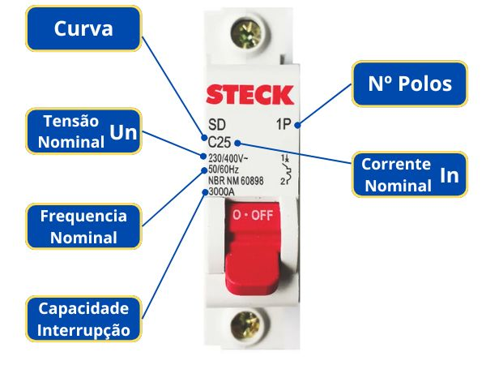
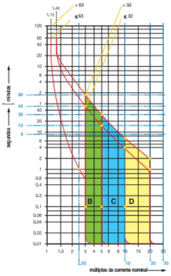

Disjuntor
O que é um disjuntor?
Um disjuntor é um dispositivo de proteção elétrica projetado para interromper o fluxo de corrente elétrica em um circuito quando a corrente excede um valor seguro predefinido. Ele é essencial em sistemas elétricos para prevenir danos causados por sobrecarga ou curto-circuito, protegendo assim equipamentos, fios e, principalmente, prevenindo incêndios.
Função do disjuntor
A principal função do disjuntor é a proteção dos circuitos elétricos. Ele atua de duas maneiras principais:
Sobrecarga: A sobrecarga refere-se a uma condição em que a corrente elétrica que flui através do circuito excede a capacidade nominal para a qual o disjuntor foi projetado. A maioria dos disjuntores utiliza um elemento bimetálico que se aquece à medida que a corrente elétrica aumenta. Se a corrente exceder a capacidade nominal do disjuntor por um período prolongado, o elemento bimetálico se deforma, acionando o mecanismo de disparo e interrompendo o circuito.
Curto-circuito: É uma falha elétrica que ocorre quando dois pontos de um circuito, que normalmente possuem uma diferença de potencial (tensão), entram em contato direto, resultando em uma corrente elétrica excessiva que desvia do caminho projetado. Esse desvio pode causar danos significativos aos componentes elétricos, aquecimento excessivo e, em casos extremos, incêndios. Disjuntores termomagnéticos possuem um eletroímã que reage rapidamente ao aumento abrupto da corrente. Quando a corrente ultrapassa um limiar específico, o campo magnético criado pelo eletroímã é forte o suficiente para acionar o mecanismo de disparo e abrir os contatos do disjuntor, interrompendo o fluxo de corrente. Isso acontece em milissegundos, minimizando o risco de danos e incêndios..
Além dessas funções primárias, os disjuntores também são usados para controlar o fornecimento de energia, permitindo ligar e desligar circuitos manualmente.
Origem e evolução do disjuntor
Os disjuntores têm suas origens no final do século XIX e início do século XX, quando a eletricidade começou a ser usada amplamente para iluminação e força motriz. A necessidade de proteger circuitos e evitar incêndios levou ao desenvolvimento de dispositivos de proteção.
Primeiros desenvolvimentos:
Thomas Edison: Nos anos 1870, Edison desenvolveu os primeiros fusíveis para proteger seus sistemas de iluminação. Os fusíveis eram dispositivos simples que fundiam e interrompiam o circuito quando a corrente excedia um valor seguro.
Granville Woods: Em 1900, Woods, um inventor afro-americano, patenteou um disjuntor automático para trens elétricos, que podia interromper a corrente em caso de sobrecarga.
Evolução dos disjuntores:
Os disjuntores modernos evoluíram dos fusíveis. Eles foram desenvolvidos para serem mais seguros e confiáveis, além de poderem ser resetados e usados repetidamente, ao contrário dos fusíveis que precisam ser substituídos após cada operação.
O desenvolvimento de disjuntores térmicos e magnéticos permitiu uma proteção mais precisa e rápida. Disjuntores térmicos utilizam o aquecimento de uma lâmina bimetálica para desarmar o circuito, enquanto disjuntores magnéticos usam a força de um eletroímã.
Informações Importantes no Disjuntor Termomagnético
Para a instalação de um disjuntor termomagnético em um sistema de baixa tensão, é crucial entender e interpretar corretamente as informações presentes no disjuntor. A seguir estão as informações típicas encontradas em um disjuntor termomagnético e o que cada uma representa:

Corrente Nominal (In): Indica a corrente máxima que o disjuntor pode suportar continuamente sem desarmar.
Tensão Nominal (Un): Indica a tensão máxima que o disjuntor pode suportar.
Capacidade de Curto-Circuito (Icn): Indica a corrente máxima de curto-circuito que o disjuntor pode interromper sem sofrer danos.
Curva de Desarme: Identificada por uma letra (B, C, D), representa o comportamento do disjuntor em relação ao tempo e corrente de desarme.
Curva B: Desarma entre 3 a 5 vezes a corrente nominal. Utilizada em circuitos com cargas resistivas, como iluminação e aquecedores elétricos.
Curva C: Desarma entre 5 a 10 vezes a corrente nominal. Usada em circuitos com cargas indutivas moderadas, como motores pequenos e grandes.
Curva D: Desarma entre 10 a 20 vezes a corrente nominal. Indicada para circuitos com cargas altamente indutivas, como grandes motores e transformadores.
Calcule
Calcule o tempo de desarme do disjuntor informando a corrente nominal do disjuntor, curva e por fim a corrente que está circulando pelo circuito
Número de Pólos: Indica quantas fases o disjuntor pode proteger. Pode ser
monopolar (1P)
bipolar (2P)
tripolar (3P)
tetrapolar (4P).
Tipo de Desarme: Térmico para sobrecargas e magnético para curtos-circuitos.
Frequência Nominal: A frequência elétrica para a qual o disjuntor é projetado, geralmente 50Hz ou 60Hz.
Poder de Interrupção em Corrente Alternada (Icu/Ics):Poder de interrupção em corrente alternada, em conformidade com as normas de segurança.
Icu: Corrente de interrupção máxima.
Ics: Corrente de interrupção de serviço.